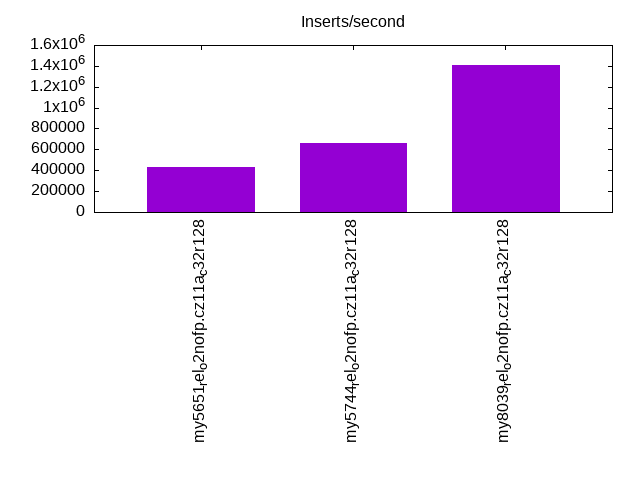
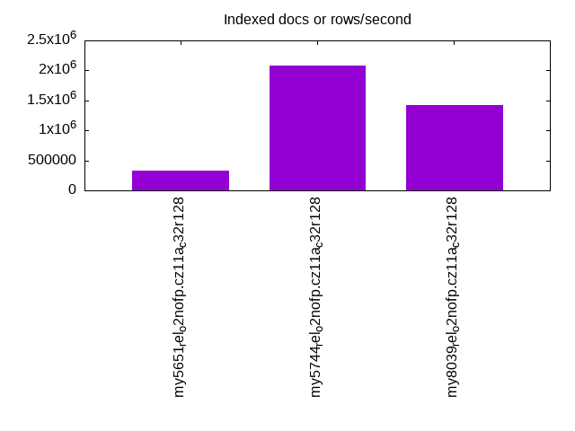
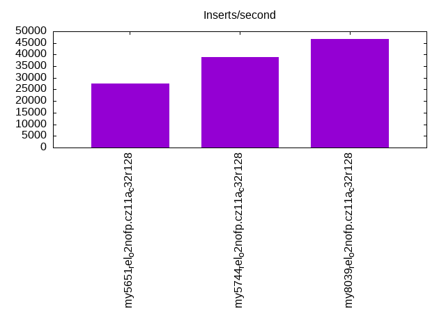
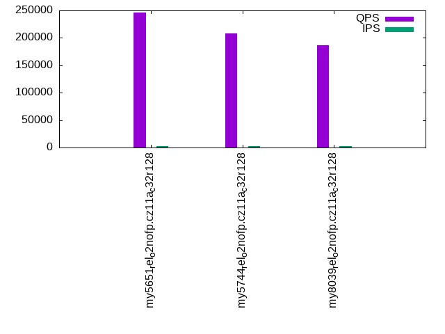
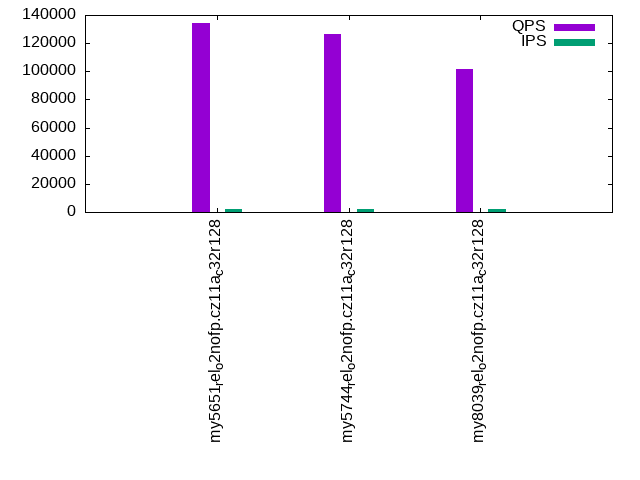
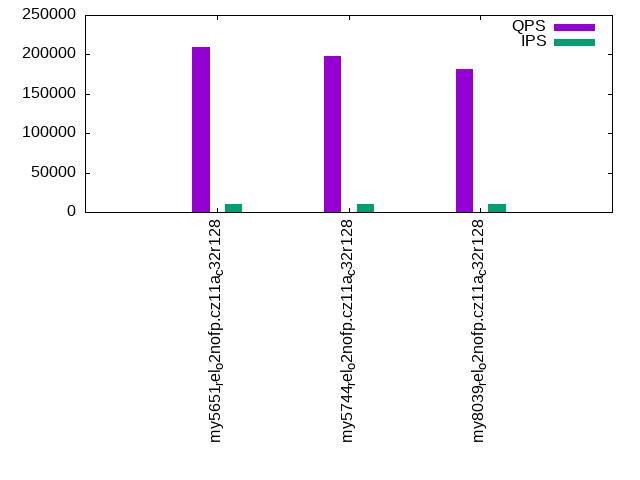
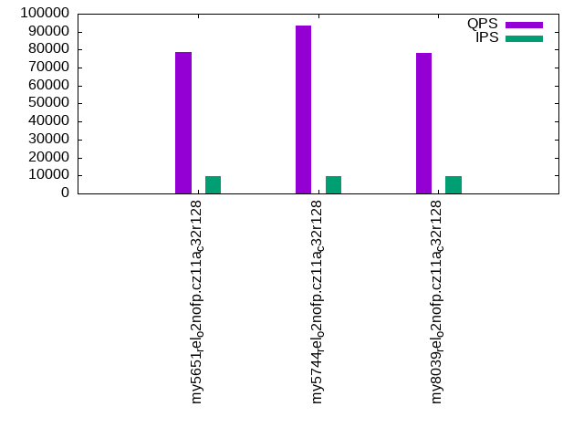
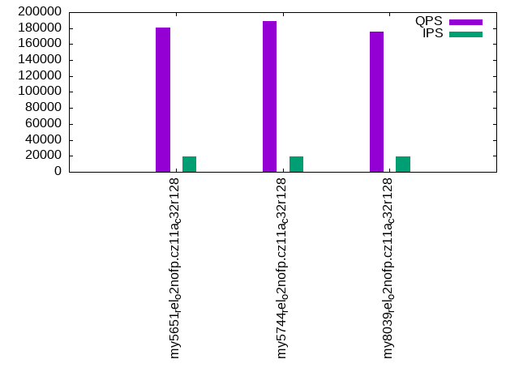
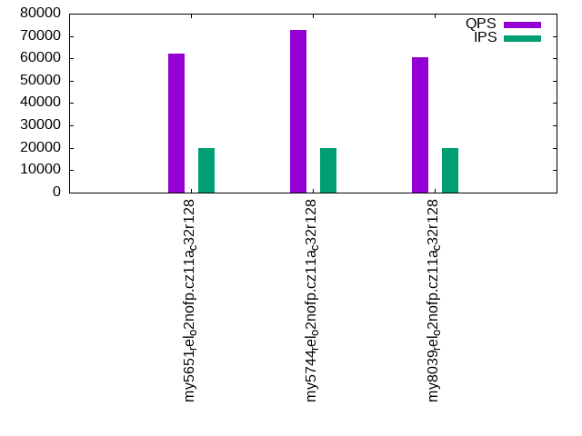

This is a report for the insert benchmark with 1280M docs and 20 client(s). It is generated by scripts (bash, awk, sed) and Tufte might not be impressed. An overview of the insert benchmark is here and a short update is here. Below, by DBMS, I mean DBMS+version.config. An example is my8020.c10b40 where my means MySQL, 8020 is version 8.0.20 and c10b40 is the name for the configuration file.
The test server is an ax162-s from Hetzner (see here) with 48 cores, AMD SMT disabled, 128G RAM and ext4 using 2 NVMe devices with SW RAID 1. The benchmark was run with 20 clients and there were 1 or 3 connections per client (1 for queries or inserts without rate limits, 1+1 for rate limited inserts+deletes). It uses 8 tables with a table per client. It loads 64M rows per table without secondary indexes, creates 3 secondary indexes per table, then inserts 4m+1m rows per table with a delete per insert to avoid growing the table. It then does 6 read+write tests for 1800s each that do queries as fast as possible with 100,100,500,500,1000,1000 inserts/s and the same for deletes/s per client concurrent with the queries. The database is larger than memory. Clients and the DBMS share one server.
The tested DBMS are:
The numbers are inserts/s for l.i0, l.i1 and l.i2, indexed docs (or rows) /s for l.x and queries/s for qr100, qp100 thru qr1000, qp1000" The values are the average rate over the entire test for inserts (IPS) and queries (QPS). The range of values for IPS and QPS is split into 3 parts: bottom 25%, middle 50%, top 25%. Values in the bottom 25% have a red background, values in the top 25% have a green background and values in the middle have no color. A gray background is used for values that can be ignored because the DBMS did not sustain the target insert rate. Red backgrounds are not used when the minimum value is within 80% of the max value.
| dbms | l.i0 | l.x | l.i1 | l.i2 | qr100 | qp100 | qr500 | qp500 | qr1000 | qp1000 |
|---|---|---|---|---|---|---|---|---|---|---|
| my5651_rel_o2nofp.cz11a_c32r128 | 429386 | 330493 | 27586 | 14347 | 246113 | 133990 | 209293 | 78923 | 180610 | 62268 |
| my5744_rel_o2nofp.cz11a_c32r128 | 663556 | 2074554 | 39062 | 25000 | 208125 | 126652 | 198302 | 93297 | 188379 | 72669 |
| my8039_rel_o2nofp.cz11a_c32r128 | 1409692 | 1426979 | 46838 | 27397 | 187093 | 101646 | 181244 | 78424 | 175950 | 60585 |
This table has relative throughput, throughput for the DBMS relative to the DBMS in the first line, using the absolute throughput from the previous table. Values less than 0.95 have a yellow background. Values greater than 1.05 have a blue background.
| dbms | l.i0 | l.x | l.i1 | l.i2 | qr100 | qp100 | qr500 | qp500 | qr1000 | qp1000 |
|---|---|---|---|---|---|---|---|---|---|---|
| my5651_rel_o2nofp.cz11a_c32r128 | 1.00 | 1.00 | 1.00 | 1.00 | 1.00 | 1.00 | 1.00 | 1.00 | 1.00 | 1.00 |
| my5744_rel_o2nofp.cz11a_c32r128 | 1.55 | 6.28 | 1.42 | 1.74 | 0.85 | 0.95 | 0.95 | 1.18 | 1.04 | 1.17 |
| my8039_rel_o2nofp.cz11a_c32r128 | 3.28 | 4.32 | 1.70 | 1.91 | 0.76 | 0.76 | 0.87 | 0.99 | 0.97 | 0.97 |
This lists the average rate of inserts/s for the tests that do inserts concurrent with queries. For such tests the query rate is listed in the table above. The read+write tests are setup so that the insert rate should match the target rate every second. Cells that are not at least 95% of the target have a red background to indicate a failure to satisfy the target.
| dbms | qr100.L1 | qp100.L2 | qr500.L3 | qp500.L4 | qr1000.L5 | qp1000.L6 |
|---|---|---|---|---|---|---|
| my5651_rel_o2nofp.cz11a_c32r128 | 1977 | 1976 | 9879 | 9885 | 19769 | 19769 |
| my5744_rel_o2nofp.cz11a_c32r128 | 1977 | 1976 | 9879 | 9885 | 19769 | 19769 |
| my8039_rel_o2nofp.cz11a_c32r128 | 1977 | 1977 | 9885 | 9885 | 19769 | 19769 |
| target | 2000 | 2000 | 10000 | 10000 | 20000 | 20000 |
l.i0: load without secondary indexes. Graphs for performance per 1-second interval are here.
Average throughput:
Insert response time histogram: each cell has the percentage of responses that take <= the time in the header and max is the max response time in seconds. For the max column values in the top 25% of the range have a red background and in the bottom 25% of the range have a green background. The red background is not used when the min value is within 80% of the max value.
| dbms | 256us | 1ms | 4ms | 16ms | 64ms | 256ms | 1s | 4s | 16s | gt | max |
|---|---|---|---|---|---|---|---|---|---|---|---|
| my5651_rel_o2nofp.cz11a_c32r128 | 0.406 | 33.195 | 65.946 | 0.417 | 0.037 | 0.190 | |||||
| my5744_rel_o2nofp.cz11a_c32r128 | 0.400 | 99.363 | 0.190 | 0.010 | 0.037 | 0.178 | |||||
| my8039_rel_o2nofp.cz11a_c32r128 | 0.240 | 99.670 | 0.038 | 0.012 | 0.039 | 0.234 |
Performance metrics for the DBMS listed above. Some are normalized by throughput, others are not. Legend for results is here.
ips qps rps rmbps wps wmbps rpq rkbpq wpi wkbpi csps cpups cspq cpupq dbgb1 dbgb2 rss maxop p50 p99 tag 429386 0 989 3.9 2637.0 148.2 0.002 0.009 0.006 0.353 104379 40.3 0.243 45 84.4 184.9 89.9 0.190 23375 15583 my5651_rel_o2nofp.cz11a_c32r128 663556 0 0 0.0 4190.1 230.7 0.000 0.000 0.006 0.356 80348 45.5 0.121 33 84.4 184.9 91.2 0.178 33963 28469 my5744_rel_o2nofp.cz11a_c32r128 1409692 0 1 0.0 8763.5 503.7 0.000 0.000 0.006 0.366 291532 53.7 0.207 18 84.1 184.6 91.3 0.234 75219 60934 my8039_rel_o2nofp.cz11a_c32r128
l.x: create secondary indexes.
Average throughput:
Performance metrics for the DBMS listed above. Some are normalized by throughput, others are not. Legend for results is here.
ips qps rps rmbps wps wmbps rpq rkbpq wpi wkbpi csps cpups cspq cpupq dbgb1 dbgb2 rss maxop p50 p99 tag 330493 0 1509 47.7 17799.3 637.1 0.005 0.148 0.054 1.974 117330 36.1 0.355 52 178.4 278.9 107.2 0.003 NA NA my5651_rel_o2nofp.cz11a_c32r128 2074554 0 7346 913.5 33307.6 2072.8 0.004 0.451 0.016 1.023 216112 27.2 0.104 6 193.9 294.4 109.0 0.001 NA NA my5744_rel_o2nofp.cz11a_c32r128 1426979 0 12142 628.7 42868.5 1711.3 0.009 0.451 0.030 1.228 244963 69.6 0.172 23 193.3 293.9 108.0 0.008 NA NA my8039_rel_o2nofp.cz11a_c32r128
l.i1: continue load after secondary indexes created with 50 inserts per transaction. Graphs for performance per 1-second interval are here.
Average throughput:
Insert response time histogram: each cell has the percentage of responses that take <= the time in the header and max is the max response time in seconds. For the max column values in the top 25% of the range have a red background and in the bottom 25% of the range have a green background. The red background is not used when the min value is within 80% of the max value.
| dbms | 256us | 1ms | 4ms | 16ms | 64ms | 256ms | 1s | 4s | 16s | gt | max |
|---|---|---|---|---|---|---|---|---|---|---|---|
| my5651_rel_o2nofp.cz11a_c32r128 | 1.161 | 28.206 | 63.883 | 0.665 | 6.086 | 0.511 | |||||
| my5744_rel_o2nofp.cz11a_c32r128 | 6.661 | 82.076 | 5.334 | 0.515 | 5.414 | 0.465 | |||||
| my8039_rel_o2nofp.cz11a_c32r128 | 16.810 | 31.385 | 50.462 | 1.229 | 0.114 | 0.626 |
Delete response time histogram: each cell has the percentage of responses that take <= the time in the header and max is the max response time in seconds. For the max column values in the top 25% of the range have a red background and in the bottom 25% of the range have a green background. The red background is not used when the min value is within 80% of the max value.
| dbms | 256us | 1ms | 4ms | 16ms | 64ms | 256ms | 1s | 4s | 16s | gt | max |
|---|---|---|---|---|---|---|---|---|---|---|---|
| my5651_rel_o2nofp.cz11a_c32r128 | 0.284 | 26.322 | 66.681 | 0.609 | 6.105 | 0.600 | |||||
| my5744_rel_o2nofp.cz11a_c32r128 | nonzero | 7.681 | 83.969 | 2.440 | 0.483 | 5.426 | 0.465 | ||||
| my8039_rel_o2nofp.cz11a_c32r128 | 17.414 | 32.209 | 49.252 | 1.024 | 0.100 | 0.625 |
Performance metrics for the DBMS listed above. Some are normalized by throughput, others are not. Legend for results is here.
ips qps rps rmbps wps wmbps rpq rkbpq wpi wkbpi csps cpups cspq cpupq dbgb1 dbgb2 rss maxop p50 p99 tag 27586 0 15552 233.2 30480.8 736.5 0.564 8.657 1.105 27.340 256912 35.7 9.313 621 268.1 373.3 104.8 0.511 1648 150 my5651_rel_o2nofp.cz11a_c32r128 39062 0 19974 312.1 34859.2 1003.3 0.511 8.182 0.892 26.302 206562 35.7 5.288 439 268.5 374.2 107.0 0.465 200 150 my5744_rel_o2nofp.cz11a_c32r128 46838 0 22406 350.1 39630.4 1247.4 0.478 7.654 0.846 27.271 362196 28.6 7.733 293 267.4 375.0 108.2 0.626 1649 899 my8039_rel_o2nofp.cz11a_c32r128
l.i2: continue load after secondary indexes created with 5 inserts per transaction. Graphs for performance per 1-second interval are here.
Average throughput:
Insert response time histogram: each cell has the percentage of responses that take <= the time in the header and max is the max response time in seconds. For the max column values in the top 25% of the range have a red background and in the bottom 25% of the range have a green background. The red background is not used when the min value is within 80% of the max value.
| dbms | 256us | 1ms | 4ms | 16ms | 64ms | 256ms | 1s | 4s | 16s | gt | max |
|---|---|---|---|---|---|---|---|---|---|---|---|
| my5651_rel_o2nofp.cz11a_c32r128 | 0.006 | 0.787 | 46.170 | 42.368 | 10.662 | 0.007 | 0.149 | ||||
| my5744_rel_o2nofp.cz11a_c32r128 | 0.043 | 24.135 | 65.994 | 0.963 | 8.844 | 0.021 | 0.253 | ||||
| my8039_rel_o2nofp.cz11a_c32r128 | 0.003 | 33.510 | 49.812 | 8.068 | 8.594 | 0.013 | nonzero | 0.416 |
Delete response time histogram: each cell has the percentage of responses that take <= the time in the header and max is the max response time in seconds. For the max column values in the top 25% of the range have a red background and in the bottom 25% of the range have a green background. The red background is not used when the min value is within 80% of the max value.
| dbms | 256us | 1ms | 4ms | 16ms | 64ms | 256ms | 1s | 4s | 16s | gt | max |
|---|---|---|---|---|---|---|---|---|---|---|---|
| my5651_rel_o2nofp.cz11a_c32r128 | 0.001 | 0.912 | 49.662 | 38.756 | 10.663 | 0.006 | 0.154 | ||||
| my5744_rel_o2nofp.cz11a_c32r128 | 0.071 | 24.253 | 66.002 | 0.820 | 8.844 | 0.011 | 0.253 | ||||
| my8039_rel_o2nofp.cz11a_c32r128 | 0.002 | 37.047 | 46.683 | 7.932 | 8.324 | 0.011 | 0.183 |
Performance metrics for the DBMS listed above. Some are normalized by throughput, others are not. Legend for results is here.
ips qps rps rmbps wps wmbps rpq rkbpq wpi wkbpi csps cpups cspq cpupq dbgb1 dbgb2 rss maxop p50 p99 tag 14347 0 10817 141.8 22677.1 589.3 0.754 10.122 1.581 42.062 367777 33.6 25.634 1124 268.1 373.3 104.3 0.149 874 150 my5651_rel_o2nofp.cz11a_c32r128 25000 0 13762 215.0 32892.7 964.3 0.550 8.808 1.316 39.496 266986 31.2 10.679 599 268.5 374.2 107.0 0.253 180 160 my5744_rel_o2nofp.cz11a_c32r128 27397 0 17898 279.7 38124.1 1191.6 0.653 10.453 1.392 44.539 411618 28.5 15.024 499 267.4 372.2 106.1 0.416 340 245 my8039_rel_o2nofp.cz11a_c32r128
qr100.L1: range queries with 100 insert/s per client. Graphs for performance per 1-second interval are here.
Average throughput:
Query response time histogram: each cell has the percentage of responses that take <= the time in the header and max is the max response time in seconds. For max values in the top 25% of the range have a red background and in the bottom 25% of the range have a green background. The red background is not used when the min value is within 80% of the max value.
| dbms | 256us | 1ms | 4ms | 16ms | 64ms | 256ms | 1s | 4s | 16s | gt | max |
|---|---|---|---|---|---|---|---|---|---|---|---|
| my5651_rel_o2nofp.cz11a_c32r128 | 99.915 | 0.068 | 0.016 | 0.001 | 0.015 | ||||||
| my5744_rel_o2nofp.cz11a_c32r128 | 99.980 | 0.015 | 0.005 | nonzero | 0.016 | ||||||
| my8039_rel_o2nofp.cz11a_c32r128 | 99.975 | 0.022 | 0.003 | nonzero | 0.014 |
Insert response time histogram: each cell has the percentage of responses that take <= the time in the header and max is the max response time in seconds. For max values in the top 25% of the range have a red background and in the bottom 25% of the range have a green background. The red background is not used when the min value is within 80% of the max value.
| dbms | 256us | 1ms | 4ms | 16ms | 64ms | 256ms | 1s | 4s | 16s | gt | max |
|---|---|---|---|---|---|---|---|---|---|---|---|
| my5651_rel_o2nofp.cz11a_c32r128 | 16.951 | 76.499 | 6.550 | 0.036 | |||||||
| my5744_rel_o2nofp.cz11a_c32r128 | 96.383 | 3.611 | 0.006 | 0.025 | |||||||
| my8039_rel_o2nofp.cz11a_c32r128 | 94.701 | 5.299 | 0.013 |
Delete response time histogram: each cell has the percentage of responses that take <= the time in the header and max is the max response time in seconds. For max values in the top 25% of the range have a red background and in the bottom 25% of the range have a green background. The red background is not used when the min value is within 80% of the max value.
| dbms | 256us | 1ms | 4ms | 16ms | 64ms | 256ms | 1s | 4s | 16s | gt | max |
|---|---|---|---|---|---|---|---|---|---|---|---|
| my5651_rel_o2nofp.cz11a_c32r128 | 30.142 | 66.133 | 3.725 | 0.033 | |||||||
| my5744_rel_o2nofp.cz11a_c32r128 | 0.001 | 98.111 | 1.885 | 0.003 | 0.020 | ||||||
| my8039_rel_o2nofp.cz11a_c32r128 | 97.653 | 2.347 | 0.011 |
Performance metrics for the DBMS listed above. Some are normalized by throughput, others are not. Legend for results is here.
ips qps rps rmbps wps wmbps rpq rkbpq wpi wkbpi csps cpups cspq cpupq dbgb1 dbgb2 rss maxop p50 p99 tag 1977 246113 262 3.5 1720.5 51.0 0.001 0.014 0.870 26.400 949688 42.9 3.859 84 268.1 373.3 104.0 0.015 12623 11172 my5651_rel_o2nofp.cz11a_c32r128 1977 208125 189 3.0 3493.4 100.0 0.001 0.015 1.767 51.803 806237 43.4 3.874 100 268.5 374.2 107.0 0.016 10552 9974 my5744_rel_o2nofp.cz11a_c32r128 1977 187093 117 1.8 3743.5 108.9 0.001 0.010 1.894 56.396 727325 43.1 3.888 111 267.4 372.2 106.1 0.014 9510 8998 my8039_rel_o2nofp.cz11a_c32r128
qp100.L2: point queries with 100 insert/s per client. Graphs for performance per 1-second interval are here.
Average throughput:
Query response time histogram: each cell has the percentage of responses that take <= the time in the header and max is the max response time in seconds. For max values in the top 25% of the range have a red background and in the bottom 25% of the range have a green background. The red background is not used when the min value is within 80% of the max value.
| dbms | 256us | 1ms | 4ms | 16ms | 64ms | 256ms | 1s | 4s | 16s | gt | max |
|---|---|---|---|---|---|---|---|---|---|---|---|
| my5651_rel_o2nofp.cz11a_c32r128 | 98.481 | 1.056 | 0.423 | 0.039 | nonzero | 0.037 | |||||
| my5744_rel_o2nofp.cz11a_c32r128 | 97.909 | 1.723 | 0.360 | 0.008 | nonzero | 0.049 | |||||
| my8039_rel_o2nofp.cz11a_c32r128 | 96.622 | 3.013 | 0.348 | 0.017 | 0.014 |
Insert response time histogram: each cell has the percentage of responses that take <= the time in the header and max is the max response time in seconds. For max values in the top 25% of the range have a red background and in the bottom 25% of the range have a green background. The red background is not used when the min value is within 80% of the max value.
| dbms | 256us | 1ms | 4ms | 16ms | 64ms | 256ms | 1s | 4s | 16s | gt | max |
|---|---|---|---|---|---|---|---|---|---|---|---|
| my5651_rel_o2nofp.cz11a_c32r128 | 0.067 | 21.771 | 78.017 | 0.146 | 0.095 | ||||||
| my5744_rel_o2nofp.cz11a_c32r128 | 0.214 | 86.607 | 12.986 | 0.193 | 0.143 | ||||||
| my8039_rel_o2nofp.cz11a_c32r128 | 0.714 | 96.471 | 2.815 | 0.034 |
Delete response time histogram: each cell has the percentage of responses that take <= the time in the header and max is the max response time in seconds. For max values in the top 25% of the range have a red background and in the bottom 25% of the range have a green background. The red background is not used when the min value is within 80% of the max value.
| dbms | 256us | 1ms | 4ms | 16ms | 64ms | 256ms | 1s | 4s | 16s | gt | max |
|---|---|---|---|---|---|---|---|---|---|---|---|
| my5651_rel_o2nofp.cz11a_c32r128 | 8.037 | 79.421 | 12.539 | 0.003 | 0.069 | ||||||
| my5744_rel_o2nofp.cz11a_c32r128 | 77.976 | 21.931 | 0.088 | 0.006 | 0.091 | ||||||
| my8039_rel_o2nofp.cz11a_c32r128 | 92.306 | 7.694 | 0.013 |
Performance metrics for the DBMS listed above. Some are normalized by throughput, others are not. Legend for results is here.
ips qps rps rmbps wps wmbps rpq rkbpq wpi wkbpi csps cpups cspq cpupq dbgb1 dbgb2 rss maxop p50 p99 tag 1976 133990 13539 210.8 15774.8 360.8 0.101 1.611 7.984 186.968 558092 40.8 4.165 146 268.1 373.3 104.0 0.037 7288 527 my5651_rel_o2nofp.cz11a_c32r128 1976 126652 13496 210.9 14482.7 366.1 0.107 1.705 7.330 189.718 551525 41.5 4.355 157 268.5 374.2 107.0 0.049 6697 655 my5744_rel_o2nofp.cz11a_c32r128 1977 101646 13399 209.4 13144.7 370.0 0.132 2.110 6.649 191.644 442375 41.6 4.352 196 267.4 372.2 106.1 0.014 5407 751 my8039_rel_o2nofp.cz11a_c32r128
qr500.L3: range queries with 500 insert/s per client. Graphs for performance per 1-second interval are here.
Average throughput:
Query response time histogram: each cell has the percentage of responses that take <= the time in the header and max is the max response time in seconds. For max values in the top 25% of the range have a red background and in the bottom 25% of the range have a green background. The red background is not used when the min value is within 80% of the max value.
| dbms | 256us | 1ms | 4ms | 16ms | 64ms | 256ms | 1s | 4s | 16s | gt | max |
|---|---|---|---|---|---|---|---|---|---|---|---|
| my5651_rel_o2nofp.cz11a_c32r128 | 99.126 | 0.682 | 0.160 | 0.032 | nonzero | nonzero | 0.098 | ||||
| my5744_rel_o2nofp.cz11a_c32r128 | 99.839 | 0.086 | 0.071 | 0.004 | nonzero | 0.028 | |||||
| my8039_rel_o2nofp.cz11a_c32r128 | 99.858 | 0.119 | 0.022 | 0.001 | nonzero | 0.029 |
Insert response time histogram: each cell has the percentage of responses that take <= the time in the header and max is the max response time in seconds. For max values in the top 25% of the range have a red background and in the bottom 25% of the range have a green background. The red background is not used when the min value is within 80% of the max value.
| dbms | 256us | 1ms | 4ms | 16ms | 64ms | 256ms | 1s | 4s | 16s | gt | max |
|---|---|---|---|---|---|---|---|---|---|---|---|
| my5651_rel_o2nofp.cz11a_c32r128 | 3.724 | 55.114 | 40.793 | 0.369 | nonzero | 0.262 | |||||
| my5744_rel_o2nofp.cz11a_c32r128 | 50.497 | 46.773 | 2.726 | 0.004 | 0.095 | ||||||
| my8039_rel_o2nofp.cz11a_c32r128 | 40.036 | 58.009 | 1.954 | 0.052 |
Delete response time histogram: each cell has the percentage of responses that take <= the time in the header and max is the max response time in seconds. For max values in the top 25% of the range have a red background and in the bottom 25% of the range have a green background. The red background is not used when the min value is within 80% of the max value.
| dbms | 256us | 1ms | 4ms | 16ms | 64ms | 256ms | 1s | 4s | 16s | gt | max |
|---|---|---|---|---|---|---|---|---|---|---|---|
| my5651_rel_o2nofp.cz11a_c32r128 | 0.001 | 6.030 | 62.216 | 31.752 | 0.001 | 0.091 | |||||
| my5744_rel_o2nofp.cz11a_c32r128 | 0.003 | 60.449 | 38.899 | 0.649 | 0.042 | ||||||
| my8039_rel_o2nofp.cz11a_c32r128 | 57.102 | 42.688 | 0.210 | 0.047 |
Performance metrics for the DBMS listed above. Some are normalized by throughput, others are not. Legend for results is here.
ips qps rps rmbps wps wmbps rpq rkbpq wpi wkbpi csps cpups cspq cpupq dbgb1 dbgb2 rss maxop p50 p99 tag 9879 209293 4202 62.9 9428.2 266.6 0.020 0.308 0.954 27.634 858908 46.2 4.104 106 268.1 373.3 104.2 0.098 10964 1375 my5651_rel_o2nofp.cz11a_c32r128 9879 198302 3840 60.0 8838.9 254.7 0.019 0.310 0.895 26.401 786952 47.2 3.968 114 268.5 374.2 107.0 0.028 10165 4123 my5744_rel_o2nofp.cz11a_c32r128 9885 181244 4148 64.8 9992.3 300.1 0.023 0.366 1.011 31.087 734486 46.6 4.052 123 267.4 372.2 106.1 0.029 9238 8266 my8039_rel_o2nofp.cz11a_c32r128
qp500.L4: point queries with 500 insert/s per client. Graphs for performance per 1-second interval are here.
Average throughput:
Query response time histogram: each cell has the percentage of responses that take <= the time in the header and max is the max response time in seconds. For max values in the top 25% of the range have a red background and in the bottom 25% of the range have a green background. The red background is not used when the min value is within 80% of the max value.
| dbms | 256us | 1ms | 4ms | 16ms | 64ms | 256ms | 1s | 4s | 16s | gt | max |
|---|---|---|---|---|---|---|---|---|---|---|---|
| my5651_rel_o2nofp.cz11a_c32r128 | 86.401 | 10.090 | 3.186 | 0.322 | nonzero | 0.037 | |||||
| my5744_rel_o2nofp.cz11a_c32r128 | 89.861 | 8.448 | 1.649 | 0.043 | nonzero | 0.021 | |||||
| my8039_rel_o2nofp.cz11a_c32r128 | 85.134 | 13.129 | 1.698 | 0.039 | nonzero | 0.019 |
Insert response time histogram: each cell has the percentage of responses that take <= the time in the header and max is the max response time in seconds. For max values in the top 25% of the range have a red background and in the bottom 25% of the range have a green background. The red background is not used when the min value is within 80% of the max value.
| dbms | 256us | 1ms | 4ms | 16ms | 64ms | 256ms | 1s | 4s | 16s | gt | max |
|---|---|---|---|---|---|---|---|---|---|---|---|
| my5651_rel_o2nofp.cz11a_c32r128 | 0.047 | 1.591 | 88.833 | 9.528 | 0.152 | ||||||
| my5744_rel_o2nofp.cz11a_c32r128 | 0.201 | 6.754 | 92.932 | 0.112 | 0.096 | ||||||
| my8039_rel_o2nofp.cz11a_c32r128 | 0.707 | 23.426 | 75.867 | 0.057 |
Delete response time histogram: each cell has the percentage of responses that take <= the time in the header and max is the max response time in seconds. For max values in the top 25% of the range have a red background and in the bottom 25% of the range have a green background. The red background is not used when the min value is within 80% of the max value.
| dbms | 256us | 1ms | 4ms | 16ms | 64ms | 256ms | 1s | 4s | 16s | gt | max |
|---|---|---|---|---|---|---|---|---|---|---|---|
| my5651_rel_o2nofp.cz11a_c32r128 | 0.708 | 61.969 | 37.316 | 0.007 | 0.101 | ||||||
| my5744_rel_o2nofp.cz11a_c32r128 | 10.992 | 84.257 | 4.751 | 0.050 | |||||||
| my8039_rel_o2nofp.cz11a_c32r128 | 51.619 | 48.107 | 0.274 | 0.045 |
Performance metrics for the DBMS listed above. Some are normalized by throughput, others are not. Legend for results is here.
ips qps rps rmbps wps wmbps rpq rkbpq wpi wkbpi csps cpups cspq cpupq dbgb1 dbgb2 rss maxop p50 p99 tag 9885 78923 42241 656.2 56373.9 924.7 0.535 8.514 5.703 95.795 660394 47.6 8.368 289 268.1 373.3 105.0 0.037 5914 368 my5651_rel_o2nofp.cz11a_c32r128 9885 93297 50552 789.9 60533.4 1302.5 0.542 8.669 6.124 134.935 640147 48.9 6.861 252 268.5 374.2 107.0 0.021 5420 479 my5744_rel_o2nofp.cz11a_c32r128 9885 78424 53470 835.5 47677.8 1310.5 0.682 10.909 4.823 135.763 548505 45.2 6.994 277 267.4 372.2 106.1 0.019 4524 575 my8039_rel_o2nofp.cz11a_c32r128
qr1000.L5: range queries with 1000 insert/s per client. Graphs for performance per 1-second interval are here.
Average throughput:
Query response time histogram: each cell has the percentage of responses that take <= the time in the header and max is the max response time in seconds. For max values in the top 25% of the range have a red background and in the bottom 25% of the range have a green background. The red background is not used when the min value is within 80% of the max value.
| dbms | 256us | 1ms | 4ms | 16ms | 64ms | 256ms | 1s | 4s | 16s | gt | max |
|---|---|---|---|---|---|---|---|---|---|---|---|
| my5651_rel_o2nofp.cz11a_c32r128 | 97.973 | 1.659 | 0.300 | 0.068 | nonzero | nonzero | 0.067 | ||||
| my5744_rel_o2nofp.cz11a_c32r128 | 99.716 | 0.173 | 0.099 | 0.012 | nonzero | 0.032 | |||||
| my8039_rel_o2nofp.cz11a_c32r128 | 99.782 | 0.171 | 0.044 | 0.003 | nonzero | 0.026 |
Insert response time histogram: each cell has the percentage of responses that take <= the time in the header and max is the max response time in seconds. For max values in the top 25% of the range have a red background and in the bottom 25% of the range have a green background. The red background is not used when the min value is within 80% of the max value.
| dbms | 256us | 1ms | 4ms | 16ms | 64ms | 256ms | 1s | 4s | 16s | gt | max |
|---|---|---|---|---|---|---|---|---|---|---|---|
| my5651_rel_o2nofp.cz11a_c32r128 | 2.586 | 51.566 | 45.673 | 0.175 | 0.181 | ||||||
| my5744_rel_o2nofp.cz11a_c32r128 | 21.283 | 74.238 | 4.479 | 0.059 | |||||||
| my8039_rel_o2nofp.cz11a_c32r128 | 34.257 | 64.085 | 1.659 | 0.055 |
Delete response time histogram: each cell has the percentage of responses that take <= the time in the header and max is the max response time in seconds. For max values in the top 25% of the range have a red background and in the bottom 25% of the range have a green background. The red background is not used when the min value is within 80% of the max value.
| dbms | 256us | 1ms | 4ms | 16ms | 64ms | 256ms | 1s | 4s | 16s | gt | max |
|---|---|---|---|---|---|---|---|---|---|---|---|
| my5651_rel_o2nofp.cz11a_c32r128 | 0.001 | 3.378 | 58.275 | 38.343 | 0.003 | 0.078 | |||||
| my5744_rel_o2nofp.cz11a_c32r128 | 0.003 | 27.866 | 69.114 | 3.017 | 0.051 | ||||||
| my8039_rel_o2nofp.cz11a_c32r128 | 47.130 | 52.266 | 0.604 | nonzero | 0.070 |
Performance metrics for the DBMS listed above. Some are normalized by throughput, others are not. Legend for results is here.
ips qps rps rmbps wps wmbps rpq rkbpq wpi wkbpi csps cpups cspq cpupq dbgb1 dbgb2 rss maxop p50 p99 tag 19769 180610 4156 59.7 10856.3 321.8 0.023 0.338 0.549 16.668 775134 50.4 4.292 134 268.1 373.3 105.0 0.067 9446 1103 my5651_rel_o2nofp.cz11a_c32r128 19769 188379 3929 61.4 13563.2 400.8 0.021 0.334 0.686 20.760 749200 52.0 3.977 132 268.5 374.2 107.0 0.032 9685 4875 my5744_rel_o2nofp.cz11a_c32r128 19769 175950 3880 60.6 13727.0 422.3 0.022 0.353 0.694 21.875 727868 49.3 4.137 134 267.4 372.2 106.1 0.026 8950 7850 my8039_rel_o2nofp.cz11a_c32r128
qp1000.L6: point queries with 1000 insert/s per client. Graphs for performance per 1-second interval are here.
Average throughput:
Query response time histogram: each cell has the percentage of responses that take <= the time in the header and max is the max response time in seconds. For max values in the top 25% of the range have a red background and in the bottom 25% of the range have a green background. The red background is not used when the min value is within 80% of the max value.
| dbms | 256us | 1ms | 4ms | 16ms | 64ms | 256ms | 1s | 4s | 16s | gt | max |
|---|---|---|---|---|---|---|---|---|---|---|---|
| my5651_rel_o2nofp.cz11a_c32r128 | 80.824 | 12.764 | 5.980 | 0.431 | 0.001 | 0.041 | |||||
| my5744_rel_o2nofp.cz11a_c32r128 | 84.643 | 10.379 | 4.886 | 0.092 | 0.001 | 0.043 | |||||
| my8039_rel_o2nofp.cz11a_c32r128 | 75.557 | 19.937 | 4.399 | 0.107 | nonzero | 0.029 |
Insert response time histogram: each cell has the percentage of responses that take <= the time in the header and max is the max response time in seconds. For max values in the top 25% of the range have a red background and in the bottom 25% of the range have a green background. The red background is not used when the min value is within 80% of the max value.
| dbms | 256us | 1ms | 4ms | 16ms | 64ms | 256ms | 1s | 4s | 16s | gt | max |
|---|---|---|---|---|---|---|---|---|---|---|---|
| my5651_rel_o2nofp.cz11a_c32r128 | 0.050 | 10.944 | 86.310 | 2.696 | 0.243 | ||||||
| my5744_rel_o2nofp.cz11a_c32r128 | 0.193 | 41.661 | 58.069 | 0.077 | 0.099 | ||||||
| my8039_rel_o2nofp.cz11a_c32r128 | 0.921 | 53.790 | 45.232 | 0.057 | 0.109 |
Delete response time histogram: each cell has the percentage of responses that take <= the time in the header and max is the max response time in seconds. For max values in the top 25% of the range have a red background and in the bottom 25% of the range have a green background. The red background is not used when the min value is within 80% of the max value.
| dbms | 256us | 1ms | 4ms | 16ms | 64ms | 256ms | 1s | 4s | 16s | gt | max |
|---|---|---|---|---|---|---|---|---|---|---|---|
| my5651_rel_o2nofp.cz11a_c32r128 | nonzero | 0.190 | 26.557 | 72.845 | 0.408 | 0.203 | |||||
| my5744_rel_o2nofp.cz11a_c32r128 | nonzero | 11.111 | 85.369 | 3.519 | 0.001 | 0.078 | |||||
| my8039_rel_o2nofp.cz11a_c32r128 | nonzero | 22.368 | 71.783 | 5.844 | 0.005 | 0.092 |
Performance metrics for the DBMS listed above. Some are normalized by throughput, others are not. Legend for results is here.
ips qps rps rmbps wps wmbps rpq rkbpq wpi wkbpi csps cpups cspq cpupq dbgb1 dbgb2 rss maxop p50 p99 tag 19769 62268 43736 676.1 47234.0 798.0 0.702 11.118 2.389 41.333 572078 52.5 9.187 405 268.1 378.3 105.0 0.041 5738 336 my5651_rel_o2nofp.cz11a_c32r128 19769 72669 68050 1063.3 59109.1 1306.5 0.936 14.983 2.990 67.676 589315 47.8 8.110 316 268.5 374.2 107.0 0.043 6105 448 my5744_rel_o2nofp.cz11a_c32r128 19769 60585 65182 1018.5 43655.5 1249.3 1.076 17.214 2.208 64.713 523099 47.0 8.634 372 267.4 373.2 106.1 0.029 4587 495 my8039_rel_o2nofp.cz11a_c32r128
l.i0: load without secondary indexes
Performance metrics for all DBMS, not just the ones listed above. Some are normalized by throughput, others are not. Legend for results is here.
ips qps rps rmbps wps wmbps rpq rkbpq wpi wkbpi csps cpups cspq cpupq dbgb1 dbgb2 rss maxop p50 p99 tag 429386 0 989 3.9 2637.0 148.2 0.002 0.009 0.006 0.353 104379 40.3 0.243 45 84.4 184.9 89.9 0.190 23375 15583 my5651_rel_o2nofp.cz11a_c32r128 663556 0 0 0.0 4190.1 230.7 0.000 0.000 0.006 0.356 80348 45.5 0.121 33 84.4 184.9 91.2 0.178 33963 28469 my5744_rel_o2nofp.cz11a_c32r128 1409692 0 1 0.0 8763.5 503.7 0.000 0.000 0.006 0.366 291532 53.7 0.207 18 84.1 184.6 91.3 0.234 75219 60934 my8039_rel_o2nofp.cz11a_c32r128
l.x: create secondary indexes
Performance metrics for all DBMS, not just the ones listed above. Some are normalized by throughput, others are not. Legend for results is here.
ips qps rps rmbps wps wmbps rpq rkbpq wpi wkbpi csps cpups cspq cpupq dbgb1 dbgb2 rss maxop p50 p99 tag 330493 0 1509 47.7 17799.3 637.1 0.005 0.148 0.054 1.974 117330 36.1 0.355 52 178.4 278.9 107.2 0.003 NA NA my5651_rel_o2nofp.cz11a_c32r128 2074554 0 7346 913.5 33307.6 2072.8 0.004 0.451 0.016 1.023 216112 27.2 0.104 6 193.9 294.4 109.0 0.001 NA NA my5744_rel_o2nofp.cz11a_c32r128 1426979 0 12142 628.7 42868.5 1711.3 0.009 0.451 0.030 1.228 244963 69.6 0.172 23 193.3 293.9 108.0 0.008 NA NA my8039_rel_o2nofp.cz11a_c32r128
l.i1: continue load after secondary indexes created with 50 inserts per transaction
Performance metrics for all DBMS, not just the ones listed above. Some are normalized by throughput, others are not. Legend for results is here.
ips qps rps rmbps wps wmbps rpq rkbpq wpi wkbpi csps cpups cspq cpupq dbgb1 dbgb2 rss maxop p50 p99 tag 27586 0 15552 233.2 30480.8 736.5 0.564 8.657 1.105 27.340 256912 35.7 9.313 621 268.1 373.3 104.8 0.511 1648 150 my5651_rel_o2nofp.cz11a_c32r128 39062 0 19974 312.1 34859.2 1003.3 0.511 8.182 0.892 26.302 206562 35.7 5.288 439 268.5 374.2 107.0 0.465 200 150 my5744_rel_o2nofp.cz11a_c32r128 46838 0 22406 350.1 39630.4 1247.4 0.478 7.654 0.846 27.271 362196 28.6 7.733 293 267.4 375.0 108.2 0.626 1649 899 my8039_rel_o2nofp.cz11a_c32r128
l.i2: continue load after secondary indexes created with 5 inserts per transaction
Performance metrics for all DBMS, not just the ones listed above. Some are normalized by throughput, others are not. Legend for results is here.
ips qps rps rmbps wps wmbps rpq rkbpq wpi wkbpi csps cpups cspq cpupq dbgb1 dbgb2 rss maxop p50 p99 tag 14347 0 10817 141.8 22677.1 589.3 0.754 10.122 1.581 42.062 367777 33.6 25.634 1124 268.1 373.3 104.3 0.149 874 150 my5651_rel_o2nofp.cz11a_c32r128 25000 0 13762 215.0 32892.7 964.3 0.550 8.808 1.316 39.496 266986 31.2 10.679 599 268.5 374.2 107.0 0.253 180 160 my5744_rel_o2nofp.cz11a_c32r128 27397 0 17898 279.7 38124.1 1191.6 0.653 10.453 1.392 44.539 411618 28.5 15.024 499 267.4 372.2 106.1 0.416 340 245 my8039_rel_o2nofp.cz11a_c32r128
qr100.L1: range queries with 100 insert/s per client
Performance metrics for all DBMS, not just the ones listed above. Some are normalized by throughput, others are not. Legend for results is here.
ips qps rps rmbps wps wmbps rpq rkbpq wpi wkbpi csps cpups cspq cpupq dbgb1 dbgb2 rss maxop p50 p99 tag 1977 246113 262 3.5 1720.5 51.0 0.001 0.014 0.870 26.400 949688 42.9 3.859 84 268.1 373.3 104.0 0.015 12623 11172 my5651_rel_o2nofp.cz11a_c32r128 1977 208125 189 3.0 3493.4 100.0 0.001 0.015 1.767 51.803 806237 43.4 3.874 100 268.5 374.2 107.0 0.016 10552 9974 my5744_rel_o2nofp.cz11a_c32r128 1977 187093 117 1.8 3743.5 108.9 0.001 0.010 1.894 56.396 727325 43.1 3.888 111 267.4 372.2 106.1 0.014 9510 8998 my8039_rel_o2nofp.cz11a_c32r128
qp100.L2: point queries with 100 insert/s per client
Performance metrics for all DBMS, not just the ones listed above. Some are normalized by throughput, others are not. Legend for results is here.
ips qps rps rmbps wps wmbps rpq rkbpq wpi wkbpi csps cpups cspq cpupq dbgb1 dbgb2 rss maxop p50 p99 tag 1976 133990 13539 210.8 15774.8 360.8 0.101 1.611 7.984 186.968 558092 40.8 4.165 146 268.1 373.3 104.0 0.037 7288 527 my5651_rel_o2nofp.cz11a_c32r128 1976 126652 13496 210.9 14482.7 366.1 0.107 1.705 7.330 189.718 551525 41.5 4.355 157 268.5 374.2 107.0 0.049 6697 655 my5744_rel_o2nofp.cz11a_c32r128 1977 101646 13399 209.4 13144.7 370.0 0.132 2.110 6.649 191.644 442375 41.6 4.352 196 267.4 372.2 106.1 0.014 5407 751 my8039_rel_o2nofp.cz11a_c32r128
qr500.L3: range queries with 500 insert/s per client
Performance metrics for all DBMS, not just the ones listed above. Some are normalized by throughput, others are not. Legend for results is here.
ips qps rps rmbps wps wmbps rpq rkbpq wpi wkbpi csps cpups cspq cpupq dbgb1 dbgb2 rss maxop p50 p99 tag 9879 209293 4202 62.9 9428.2 266.6 0.020 0.308 0.954 27.634 858908 46.2 4.104 106 268.1 373.3 104.2 0.098 10964 1375 my5651_rel_o2nofp.cz11a_c32r128 9879 198302 3840 60.0 8838.9 254.7 0.019 0.310 0.895 26.401 786952 47.2 3.968 114 268.5 374.2 107.0 0.028 10165 4123 my5744_rel_o2nofp.cz11a_c32r128 9885 181244 4148 64.8 9992.3 300.1 0.023 0.366 1.011 31.087 734486 46.6 4.052 123 267.4 372.2 106.1 0.029 9238 8266 my8039_rel_o2nofp.cz11a_c32r128
qp500.L4: point queries with 500 insert/s per client
Performance metrics for all DBMS, not just the ones listed above. Some are normalized by throughput, others are not. Legend for results is here.
ips qps rps rmbps wps wmbps rpq rkbpq wpi wkbpi csps cpups cspq cpupq dbgb1 dbgb2 rss maxop p50 p99 tag 9885 78923 42241 656.2 56373.9 924.7 0.535 8.514 5.703 95.795 660394 47.6 8.368 289 268.1 373.3 105.0 0.037 5914 368 my5651_rel_o2nofp.cz11a_c32r128 9885 93297 50552 789.9 60533.4 1302.5 0.542 8.669 6.124 134.935 640147 48.9 6.861 252 268.5 374.2 107.0 0.021 5420 479 my5744_rel_o2nofp.cz11a_c32r128 9885 78424 53470 835.5 47677.8 1310.5 0.682 10.909 4.823 135.763 548505 45.2 6.994 277 267.4 372.2 106.1 0.019 4524 575 my8039_rel_o2nofp.cz11a_c32r128
qr1000.L5: range queries with 1000 insert/s per client
Performance metrics for all DBMS, not just the ones listed above. Some are normalized by throughput, others are not. Legend for results is here.
ips qps rps rmbps wps wmbps rpq rkbpq wpi wkbpi csps cpups cspq cpupq dbgb1 dbgb2 rss maxop p50 p99 tag 19769 180610 4156 59.7 10856.3 321.8 0.023 0.338 0.549 16.668 775134 50.4 4.292 134 268.1 373.3 105.0 0.067 9446 1103 my5651_rel_o2nofp.cz11a_c32r128 19769 188379 3929 61.4 13563.2 400.8 0.021 0.334 0.686 20.760 749200 52.0 3.977 132 268.5 374.2 107.0 0.032 9685 4875 my5744_rel_o2nofp.cz11a_c32r128 19769 175950 3880 60.6 13727.0 422.3 0.022 0.353 0.694 21.875 727868 49.3 4.137 134 267.4 372.2 106.1 0.026 8950 7850 my8039_rel_o2nofp.cz11a_c32r128
qp1000.L6: point queries with 1000 insert/s per client
Performance metrics for all DBMS, not just the ones listed above. Some are normalized by throughput, others are not. Legend for results is here.
ips qps rps rmbps wps wmbps rpq rkbpq wpi wkbpi csps cpups cspq cpupq dbgb1 dbgb2 rss maxop p50 p99 tag 19769 62268 43736 676.1 47234.0 798.0 0.702 11.118 2.389 41.333 572078 52.5 9.187 405 268.1 378.3 105.0 0.041 5738 336 my5651_rel_o2nofp.cz11a_c32r128 19769 72669 68050 1063.3 59109.1 1306.5 0.936 14.983 2.990 67.676 589315 47.8 8.110 316 268.5 374.2 107.0 0.043 6105 448 my5744_rel_o2nofp.cz11a_c32r128 19769 60585 65182 1018.5 43655.5 1249.3 1.076 17.214 2.208 64.713 523099 47.0 8.634 372 267.4 373.2 106.1 0.029 4587 495 my8039_rel_o2nofp.cz11a_c32r128
Insert response time histogram
256us 1ms 4ms 16ms 64ms 256ms 1s 4s 16s gt max tag 0.000 0.406 33.195 65.946 0.417 0.037 0.000 0.000 0.000 0.000 0.190 my5651_rel_o2nofp.cz11a_c32r128 0.000 0.400 99.363 0.190 0.010 0.037 0.000 0.000 0.000 0.000 0.178 my5744_rel_o2nofp.cz11a_c32r128 0.000 0.240 99.670 0.038 0.012 0.039 0.000 0.000 0.000 0.000 0.234 my8039_rel_o2nofp.cz11a_c32r128
TODO - determine whether there is data for create index response time
Insert response time histogram
256us 1ms 4ms 16ms 64ms 256ms 1s 4s 16s gt max tag 0.000 0.000 1.161 28.206 63.883 0.665 6.086 0.000 0.000 0.000 0.511 my5651_rel_o2nofp.cz11a_c32r128 0.000 0.000 6.661 82.076 5.334 0.515 5.414 0.000 0.000 0.000 0.465 my5744_rel_o2nofp.cz11a_c32r128 0.000 0.000 16.810 31.385 50.462 1.229 0.114 0.000 0.000 0.000 0.626 my8039_rel_o2nofp.cz11a_c32r128
Delete response time histogram
256us 1ms 4ms 16ms 64ms 256ms 1s 4s 16s gt max tag 0.000 0.000 0.284 26.322 66.681 0.609 6.105 0.000 0.000 0.000 0.600 my5651_rel_o2nofp.cz11a_c32r128 0.000 nonzero 7.681 83.969 2.440 0.483 5.426 0.000 0.000 0.000 0.465 my5744_rel_o2nofp.cz11a_c32r128 0.000 0.000 17.414 32.209 49.252 1.024 0.100 0.000 0.000 0.000 0.625 my8039_rel_o2nofp.cz11a_c32r128
Insert response time histogram
256us 1ms 4ms 16ms 64ms 256ms 1s 4s 16s gt max tag 0.006 0.787 46.170 42.368 10.662 0.007 0.000 0.000 0.000 0.000 0.149 my5651_rel_o2nofp.cz11a_c32r128 0.043 24.135 65.994 0.963 8.844 0.021 0.000 0.000 0.000 0.000 0.253 my5744_rel_o2nofp.cz11a_c32r128 0.003 33.510 49.812 8.068 8.594 0.013 nonzero 0.000 0.000 0.000 0.416 my8039_rel_o2nofp.cz11a_c32r128
Delete response time histogram
256us 1ms 4ms 16ms 64ms 256ms 1s 4s 16s gt max tag 0.001 0.912 49.662 38.756 10.663 0.006 0.000 0.000 0.000 0.000 0.154 my5651_rel_o2nofp.cz11a_c32r128 0.071 24.253 66.002 0.820 8.844 0.011 0.000 0.000 0.000 0.000 0.253 my5744_rel_o2nofp.cz11a_c32r128 0.002 37.047 46.683 7.932 8.324 0.011 0.000 0.000 0.000 0.000 0.183 my8039_rel_o2nofp.cz11a_c32r128
Query response time histogram
256us 1ms 4ms 16ms 64ms 256ms 1s 4s 16s gt max tag 99.915 0.068 0.016 0.001 0.000 0.000 0.000 0.000 0.000 0.000 0.015 my5651_rel_o2nofp.cz11a_c32r128 99.980 0.015 0.005 nonzero 0.000 0.000 0.000 0.000 0.000 0.000 0.016 my5744_rel_o2nofp.cz11a_c32r128 99.975 0.022 0.003 nonzero 0.000 0.000 0.000 0.000 0.000 0.000 0.014 my8039_rel_o2nofp.cz11a_c32r128
Insert response time histogram
256us 1ms 4ms 16ms 64ms 256ms 1s 4s 16s gt max tag 0.000 0.000 16.951 76.499 6.550 0.000 0.000 0.000 0.000 0.000 0.036 my5651_rel_o2nofp.cz11a_c32r128 0.000 0.000 96.383 3.611 0.006 0.000 0.000 0.000 0.000 0.000 0.025 my5744_rel_o2nofp.cz11a_c32r128 0.000 0.000 94.701 5.299 0.000 0.000 0.000 0.000 0.000 0.000 0.013 my8039_rel_o2nofp.cz11a_c32r128
Delete response time histogram
256us 1ms 4ms 16ms 64ms 256ms 1s 4s 16s gt max tag 0.000 0.000 30.142 66.133 3.725 0.000 0.000 0.000 0.000 0.000 0.033 my5651_rel_o2nofp.cz11a_c32r128 0.000 0.001 98.111 1.885 0.003 0.000 0.000 0.000 0.000 0.000 0.020 my5744_rel_o2nofp.cz11a_c32r128 0.000 0.000 97.653 2.347 0.000 0.000 0.000 0.000 0.000 0.000 0.011 my8039_rel_o2nofp.cz11a_c32r128
Query response time histogram
256us 1ms 4ms 16ms 64ms 256ms 1s 4s 16s gt max tag 98.481 1.056 0.423 0.039 nonzero 0.000 0.000 0.000 0.000 0.000 0.037 my5651_rel_o2nofp.cz11a_c32r128 97.909 1.723 0.360 0.008 nonzero 0.000 0.000 0.000 0.000 0.000 0.049 my5744_rel_o2nofp.cz11a_c32r128 96.622 3.013 0.348 0.017 0.000 0.000 0.000 0.000 0.000 0.000 0.014 my8039_rel_o2nofp.cz11a_c32r128
Insert response time histogram
256us 1ms 4ms 16ms 64ms 256ms 1s 4s 16s gt max tag 0.000 0.000 0.067 21.771 78.017 0.146 0.000 0.000 0.000 0.000 0.095 my5651_rel_o2nofp.cz11a_c32r128 0.000 0.000 0.214 86.607 12.986 0.193 0.000 0.000 0.000 0.000 0.143 my5744_rel_o2nofp.cz11a_c32r128 0.000 0.000 0.714 96.471 2.815 0.000 0.000 0.000 0.000 0.000 0.034 my8039_rel_o2nofp.cz11a_c32r128
Delete response time histogram
256us 1ms 4ms 16ms 64ms 256ms 1s 4s 16s gt max tag 0.000 0.000 8.037 79.421 12.539 0.003 0.000 0.000 0.000 0.000 0.069 my5651_rel_o2nofp.cz11a_c32r128 0.000 0.000 77.976 21.931 0.088 0.006 0.000 0.000 0.000 0.000 0.091 my5744_rel_o2nofp.cz11a_c32r128 0.000 0.000 92.306 7.694 0.000 0.000 0.000 0.000 0.000 0.000 0.013 my8039_rel_o2nofp.cz11a_c32r128
Query response time histogram
256us 1ms 4ms 16ms 64ms 256ms 1s 4s 16s gt max tag 99.126 0.682 0.160 0.032 nonzero nonzero 0.000 0.000 0.000 0.000 0.098 my5651_rel_o2nofp.cz11a_c32r128 99.839 0.086 0.071 0.004 nonzero 0.000 0.000 0.000 0.000 0.000 0.028 my5744_rel_o2nofp.cz11a_c32r128 99.858 0.119 0.022 0.001 nonzero 0.000 0.000 0.000 0.000 0.000 0.029 my8039_rel_o2nofp.cz11a_c32r128
Insert response time histogram
256us 1ms 4ms 16ms 64ms 256ms 1s 4s 16s gt max tag 0.000 0.000 3.724 55.114 40.793 0.369 nonzero 0.000 0.000 0.000 0.262 my5651_rel_o2nofp.cz11a_c32r128 0.000 0.000 50.497 46.773 2.726 0.004 0.000 0.000 0.000 0.000 0.095 my5744_rel_o2nofp.cz11a_c32r128 0.000 0.000 40.036 58.009 1.954 0.000 0.000 0.000 0.000 0.000 0.052 my8039_rel_o2nofp.cz11a_c32r128
Delete response time histogram
256us 1ms 4ms 16ms 64ms 256ms 1s 4s 16s gt max tag 0.000 0.001 6.030 62.216 31.752 0.001 0.000 0.000 0.000 0.000 0.091 my5651_rel_o2nofp.cz11a_c32r128 0.000 0.003 60.449 38.899 0.649 0.000 0.000 0.000 0.000 0.000 0.042 my5744_rel_o2nofp.cz11a_c32r128 0.000 0.000 57.102 42.688 0.210 0.000 0.000 0.000 0.000 0.000 0.047 my8039_rel_o2nofp.cz11a_c32r128
Query response time histogram
256us 1ms 4ms 16ms 64ms 256ms 1s 4s 16s gt max tag 86.401 10.090 3.186 0.322 nonzero 0.000 0.000 0.000 0.000 0.000 0.037 my5651_rel_o2nofp.cz11a_c32r128 89.861 8.448 1.649 0.043 nonzero 0.000 0.000 0.000 0.000 0.000 0.021 my5744_rel_o2nofp.cz11a_c32r128 85.134 13.129 1.698 0.039 nonzero 0.000 0.000 0.000 0.000 0.000 0.019 my8039_rel_o2nofp.cz11a_c32r128
Insert response time histogram
256us 1ms 4ms 16ms 64ms 256ms 1s 4s 16s gt max tag 0.000 0.000 0.047 1.591 88.833 9.528 0.000 0.000 0.000 0.000 0.152 my5651_rel_o2nofp.cz11a_c32r128 0.000 0.000 0.201 6.754 92.932 0.112 0.000 0.000 0.000 0.000 0.096 my5744_rel_o2nofp.cz11a_c32r128 0.000 0.000 0.707 23.426 75.867 0.000 0.000 0.000 0.000 0.000 0.057 my8039_rel_o2nofp.cz11a_c32r128
Delete response time histogram
256us 1ms 4ms 16ms 64ms 256ms 1s 4s 16s gt max tag 0.000 0.000 0.708 61.969 37.316 0.007 0.000 0.000 0.000 0.000 0.101 my5651_rel_o2nofp.cz11a_c32r128 0.000 0.000 10.992 84.257 4.751 0.000 0.000 0.000 0.000 0.000 0.050 my5744_rel_o2nofp.cz11a_c32r128 0.000 0.000 51.619 48.107 0.274 0.000 0.000 0.000 0.000 0.000 0.045 my8039_rel_o2nofp.cz11a_c32r128
Query response time histogram
256us 1ms 4ms 16ms 64ms 256ms 1s 4s 16s gt max tag 97.973 1.659 0.300 0.068 nonzero nonzero 0.000 0.000 0.000 0.000 0.067 my5651_rel_o2nofp.cz11a_c32r128 99.716 0.173 0.099 0.012 nonzero 0.000 0.000 0.000 0.000 0.000 0.032 my5744_rel_o2nofp.cz11a_c32r128 99.782 0.171 0.044 0.003 nonzero 0.000 0.000 0.000 0.000 0.000 0.026 my8039_rel_o2nofp.cz11a_c32r128
Insert response time histogram
256us 1ms 4ms 16ms 64ms 256ms 1s 4s 16s gt max tag 0.000 0.000 2.586 51.566 45.673 0.175 0.000 0.000 0.000 0.000 0.181 my5651_rel_o2nofp.cz11a_c32r128 0.000 0.000 21.283 74.238 4.479 0.000 0.000 0.000 0.000 0.000 0.059 my5744_rel_o2nofp.cz11a_c32r128 0.000 0.000 34.257 64.085 1.659 0.000 0.000 0.000 0.000 0.000 0.055 my8039_rel_o2nofp.cz11a_c32r128
Delete response time histogram
256us 1ms 4ms 16ms 64ms 256ms 1s 4s 16s gt max tag 0.000 0.001 3.378 58.275 38.343 0.003 0.000 0.000 0.000 0.000 0.078 my5651_rel_o2nofp.cz11a_c32r128 0.000 0.003 27.866 69.114 3.017 0.000 0.000 0.000 0.000 0.000 0.051 my5744_rel_o2nofp.cz11a_c32r128 0.000 0.000 47.130 52.266 0.604 nonzero 0.000 0.000 0.000 0.000 0.070 my8039_rel_o2nofp.cz11a_c32r128
Query response time histogram
256us 1ms 4ms 16ms 64ms 256ms 1s 4s 16s gt max tag 80.824 12.764 5.980 0.431 0.001 0.000 0.000 0.000 0.000 0.000 0.041 my5651_rel_o2nofp.cz11a_c32r128 84.643 10.379 4.886 0.092 0.001 0.000 0.000 0.000 0.000 0.000 0.043 my5744_rel_o2nofp.cz11a_c32r128 75.557 19.937 4.399 0.107 nonzero 0.000 0.000 0.000 0.000 0.000 0.029 my8039_rel_o2nofp.cz11a_c32r128
Insert response time histogram
256us 1ms 4ms 16ms 64ms 256ms 1s 4s 16s gt max tag 0.000 0.000 0.050 10.944 86.310 2.696 0.000 0.000 0.000 0.000 0.243 my5651_rel_o2nofp.cz11a_c32r128 0.000 0.000 0.193 41.661 58.069 0.077 0.000 0.000 0.000 0.000 0.099 my5744_rel_o2nofp.cz11a_c32r128 0.000 0.000 0.921 53.790 45.232 0.057 0.000 0.000 0.000 0.000 0.109 my8039_rel_o2nofp.cz11a_c32r128
Delete response time histogram
256us 1ms 4ms 16ms 64ms 256ms 1s 4s 16s gt max tag 0.000 nonzero 0.190 26.557 72.845 0.408 0.000 0.000 0.000 0.000 0.203 my5651_rel_o2nofp.cz11a_c32r128 0.000 nonzero 11.111 85.369 3.519 0.001 0.000 0.000 0.000 0.000 0.078 my5744_rel_o2nofp.cz11a_c32r128 0.000 nonzero 22.368 71.783 5.844 0.005 0.000 0.000 0.000 0.000 0.092 my8039_rel_o2nofp.cz11a_c32r128